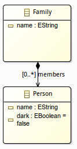
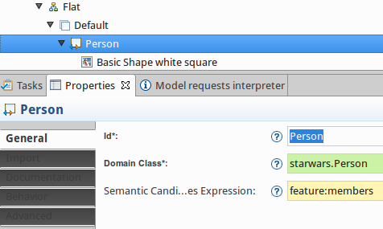
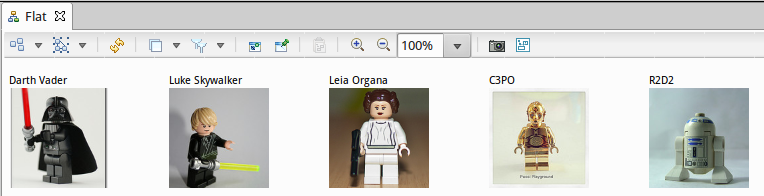
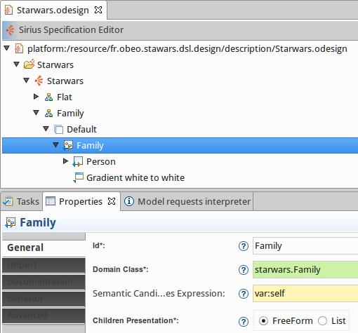
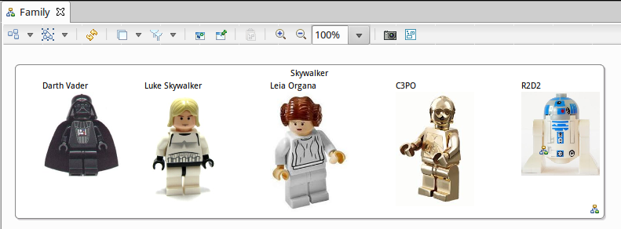
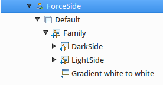
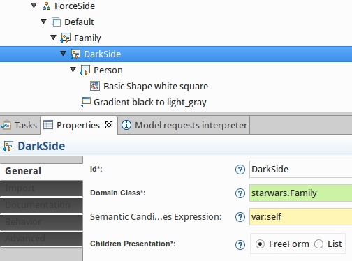
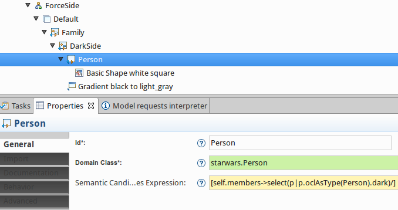
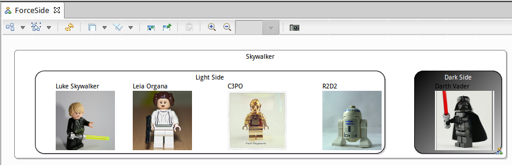

Continuing the Sirius blog posts series, today we will see a small tip : how to create artificial containers in your diagram?
One of the main advantage of Sirius is that the graphical representations are independent from the metamodel’s structure. This means that you can choose to not respect the containment hierarchy of your model when you display it graphically. This is possible thanks to Sirius being based on queries.
In the following example, we define a metamodel of a family :

To begin with, we define a Flat diagram, which displays all the members of the family at the same level :

In the Person mapping, we use the Semantic Candidates Expression to provide which semantic elements must be represented. These expressions returning model elements, we call them queries. To write these queries, there are different languages provided by default in Sirius : specialized interpreters (var, feature, service), Acceleo, raw OCL or Java. Here, we use the feature interpreter to get for a family all the persons referenced by the members reference. You can easily identify interpreted expressions by their yellow background in the Properties tab of an element.
We create a first diagram which represents the flattened Skywalker family:

The next step is to add a level to model the Family as a container. We create a new Family diagram which contains a Family container mapping and a Person mapping as sub nodes:

The Family diagram is created and all the members are represented inside the Skywalker container.

Here we represent graphically the containment reference members. But what to do if we want to create an artificial container which does not exist in the metamodel as a containment reference?
Let’s see! Now imagine that we want to add a level to represent The Force and if the person is related to the dark side or the light side. To do this we create a new ForceSide diagram :

We add a new container to represent the DarkSide of the force :

The dark side must be represented once for each family, the semantic candidate returns var:self which means the current family. As it should contain persons, it is defined as a FreeForm container.
We need to represent, in the Dark Side container, the persons that are from the dark side of the force. So we define a new sub node Person with the Semantic expression set to : [self.members->select(p|p.oclAsType(Person).dark)/]
This query returns all the members of a family and selects only the Person which has the attribute dark set to true.

Then we reuse the Person mapping to represent the person in its force side container.
Finally, we do the same for the light side of the force and create a LightSide container and the Person mapping to represent members of the family in this new container who are influenced by the ligth side : [not self.members->select(p|p.oclAsType(Person).dark)/]
A new ForceSide diagram is created in the Skywalker family and we discover that only Darth Vader is from the dark side of the force and that his children are driven by the light side of the force.

As we saw thanks to the queries in Sirius, it is easy to create artificial containers which are not related to containment referencers in the metamodel.
"May the Sirius Force be with you" ;)
The sample code from this example is available on github: https://github.com/mbats/sirius-blog/tree/master/artificial-container